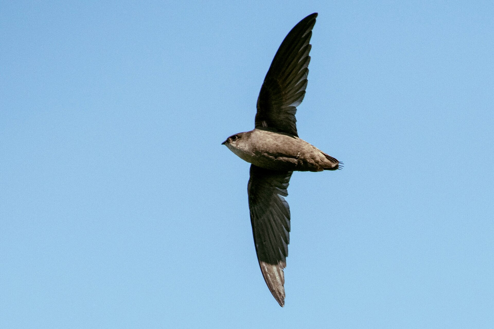

Tompkins County - upstate New York
Birds in the Chimney in Ithaca, NY
Ithaca's mix of wooded gorges, Cayuga Lake shoreline and older homes near the woods makes it prime territory for attic wildlife. Between Cornell-area rentals, Fall Creek and East Hill colonials and houses backing onto the gorges, animals are never far from a warm roofline. When raccoons, bats or squirrels move in, humane removal plus proper exclusion is what keeps them out for good.
Birds come down from the top. In Ithaca, chimney swifts return each spring and read an uncapped brick flue as a nesting cliff, while starlings colonise bathroom and kitchen vent runs on homes across Downtown / The Commons and Collegetown. The first sign is sound: chirping and fluttering from the chimney, or scratching inside a vent run. The birds themselves do little structural harm. The blockage, droppings and mites that come with a nest do the damage.
Local records: 22 chimney swift observations recorded within 25 km of Ithaca (iNaturalist).
Birds in the Chimney problems in Ithaca
Bird damage is blockage and contamination. A nest in a flue restricts draft and pushes smoke and carbon monoxide risk the wrong way; a heating chimney should never share space with one. Nests in vent runs block bathroom and dryer airflow, hold moisture against ducting, and harbour bird mites that wander indoors when nestlings fledge. On older homes tucked against wooded hillsides in Ithaca, all of it is fixed cheaply in February, before anything arrives.

Signs to check for
- Chirping, peeping and fluttering from the chimney, loudest when nestlings are fed
- A cigar-shaped nest visible on an inner chimney wall, or nesting material in the fireplace
- Scratching and rustling in bathroom or kitchen vent runs, with lint and straw at the vent mouth
- Birds seen entering the same vent or chimney gap on a steady schedule
- Droppings below a vent outlet and feathers at the opening
- A sulphur or musty smell from a blocked flue, and smoke drawing poorly
Birds leave no tracks. The field signs are sound, nesting material and droppings below the entry, plus sightings at the opening itself. Whitewash droppings collect below vents and at the fireplace base. In flues, droppings mix with nesting debris and can block draft. Chimney swifts are small, 5 inches, cigar-shaped with long wings. Starlings, the usual vent birds, are 8 inches.
What the records show near Ithaca
22 chimney swift observations recorded within 25 km of Ithaca (iNaturalist). GBIF, a second dataset, holds 10,260 mammal occurrence records for the area around Ithaca: these animals are established residents of Tompkins County, which is why the work below ends with sealing and screening, not removal alone.
Counts reflect recording effort as well as animals: proof of presence near Ithaca, not a census.
Birds in the Chimney services in Ithaca
Chimney swifts in the flue in Ithaca
Swifts nest on the inner wall of the flue, one pair to a chimney, one brood through the summer. The work is identification first: swift, starling, or a raccoon using the same chimney. For swifts in nesting season the answer is patience: once the young fledge and the colony leaves in late summer, the nest comes out, the flue is cleaned, and a cap ends the story. None of that sequence can be hurried legally.
Starlings in bathroom and kitchen vents in Ithaca
Starlings are the vent birds of Ithaca: in from March, nesting in vent runs, raising two broods and stuffing the duct with straw. Unlike swifts they are not protected in the same way, but an active nest with eggs still sets the timing. After fledging, nest and debris come out, the run is cleaned, and a proper cover replaces the louvre the birds walked through.
Nest removal after fledging in Ithaca
Post-season nest removal is the satisfying half of bird work: nest, debris and droppings come out of the flue or vent run, the space is checked for mites, cleaned, and capped in the same visit. Booking it for the weeks right after the birds leave, late summer into autumn, is how a chimney in Ithaca starts the next spring already solved.
Chimney cap and vent cover fitting in Ithaca
The cap is the whole point. A correctly sized cap keeps swifts, starlings, raccoons and squirrels out of the flue while letting it breathe; a mesh cover does the same for vent runs. On Ithaca's older chimneys the cap often has to be measured and fitted to a non-standard flue, which is what an estimate should describe: cap type and size, not just a line that says cap.
Bird fallen into the fireplace or stove in Ithaca
A swift or starling that slips below the nest site ends up fluttering at the damper or inside a stove. Keep the room closed, open an outside door, darken the room, and let the bird find the light, or call for a same-day visit. Do not light a fire to encourage it.
Droppings and bird mite cleanup in Ithaca
When nestlings fledge or a nest fails, bird mites leave the nest and can wander into living space for a week or two. The cleanup removes the nest material they live in, treats the vent or fireplace area, and the problem ends with the nest gone. Droppings are cleaned in the same visit, wet and bagged, never dry swept.
How bird removal works in Ithaca

- Identify the species before touching anything. Swift, starling or something else entirely: the species sets the law, the timing and the method, so identification comes first, by sight, sound and nest shape.
- Time the work to the nesting calendar. Active swift nests wait for fledging. Vent nests are timed to the brood. The calendar is not bureaucracy; it is what keeps the job legal and the birds alive.
- Remove nests and clean the space. Once the birds are gone, nest material, debris and droppings come out of the flue or vent run, and the space is cleaned and checked.
- Fit the cap or cover that ends the story. A measured chimney cap or mesh vent cover closes the opening to birds and to raccoons and squirrels, while the flue or vent keeps working.
Chimney swifts are protected under the federal Migratory Bird Treaty Act, and that legal calendar governs every bird job in Tompkins County. The work itself runs through NYS DEC-licensed operators.
What birds in the chimney removal costs in Ithaca
| Service | Typical range | Notes |
|---|---|---|
| Inspection and entry-point survey | $150-$300 | Often credited toward the work when you proceed. |
| Single-animal humane removal | $300-$600 | One animal, one entry point, straightforward access. |
| Bat exclusion, full home | $800-$2,500 | Colony work: one-way valves, full seal, guano check. |
| Attic cleanup and disinfection | Quoted after inspection | Depends on droppings volume and insulation condition. |
Ithaca pricing tracks the wider Finger Lakes market. Homes near the gorges or lake with steep rooflines can sit at the higher end of exclusion ranges because safe access takes longer.
Bird work in Ithaca usually sits at the lower end of the ranges when it is a vent nest after fledging and a cover fitted in one visit. It climbs when a flue needs a full cleanout, when steep rooflines are involved, or when a cap has to be custom sized for an older chimney.
Birds in the Chimney season in Ithaca
Bird season in Ithaca is the tightest calendar on this site. Chimney swifts arrive in late April and May, nest through summer, and the young fledge by late summer; the colony leaves for South America by early autumn, and observation records near Ithaca peak in April, when chimneys are full and loud. Winter is cap-fitting season, and it is the smart time: a cap fitted in Ithaca in February ends the story before the first scout arrives in spring. Starlings move earlier, probing vents from March.
Birds in the chimney removal in Ithaca: questions and answers
How much does bird removal from a chimney or vent cost in Ithaca?
In Ithaca the canonical bands apply: inspection $150 to $300, single-animal removal $300 to $600, bat exclusion $800 to $2,500, and cleanup quoted after inspection. Bird work usually sits at the lower end: a post-season vent nest and a cover fitted in one visit. The written estimate after inspection is the number to trust.
Is it legal to remove chimney swifts from my chimney in Ithaca?
Not while they are nesting. Chimney swifts are protected under the Migratory Bird Treaty Act, and an active nest, eggs or young cannot be removed or disturbed. The legal sequence is to wait until the young fledge and the birds leave in late summer, then remove the nest, clean the flue and fit a cap. An operator offering to remove an active swift nest in June is offering to break federal law.
There are birds chirping in my chimney in Ithaca. What do I do?
Nothing drastic, and do not light a fire. Loud chirping on a summer morning usually means nestlings being fed: they fledge within weeks. Keep the damper closed if debris falls, note the dates, and book the post-season nest removal and cap now, so the visit lands right after the birds leave.
Can a chimney cap keep birds out without trapping them in?
Yes, when it is fitted at the right time. A cap fitted in winter, or after the season, closes an empty flue to everything with wings or paws. Fitted over an occupied chimney it traps the occupants, which is why operators in Tompkins County check the flue first.
Birds are nesting in my bathroom vent in Ithaca. Can the nest come out now?
Starlings, the usual vent tenants, nest from March and raise two broods; an active nest with eggs or young sets a short wait, then nest and debris come out and a mesh cover goes on. An empty or half-built nest can be dealt with straight away.
Smoke is drawing poorly from my fireplace. Could it be a nest?
It could, and treat it seriously. A nest or debris in a flue restricts draft and pushes smoke and carbon monoxide the wrong way. Do not light the fire again until the flue is checked; a chimney sweep follows the wildlife work to certify it clear.
Do you use poison or deterrents for birds?
No. There is no poison programme for chimney or vent birds on this site, and gels or spikes have no place inside a flue. The method is identification, legal timing, nest removal once empty, cleaning, and a cap or cover.
Are bird removal operators licensed in New York?
Nuisance work in Tompkins County runs through NYS DEC-licensed operators, and bird work adds a federal layer: swifts are governed by the Migratory Bird Treaty Act. Ask for licence details, a written estimate, and a plan that names the species and its legal window. This site matches homeowners with licensed operators only.